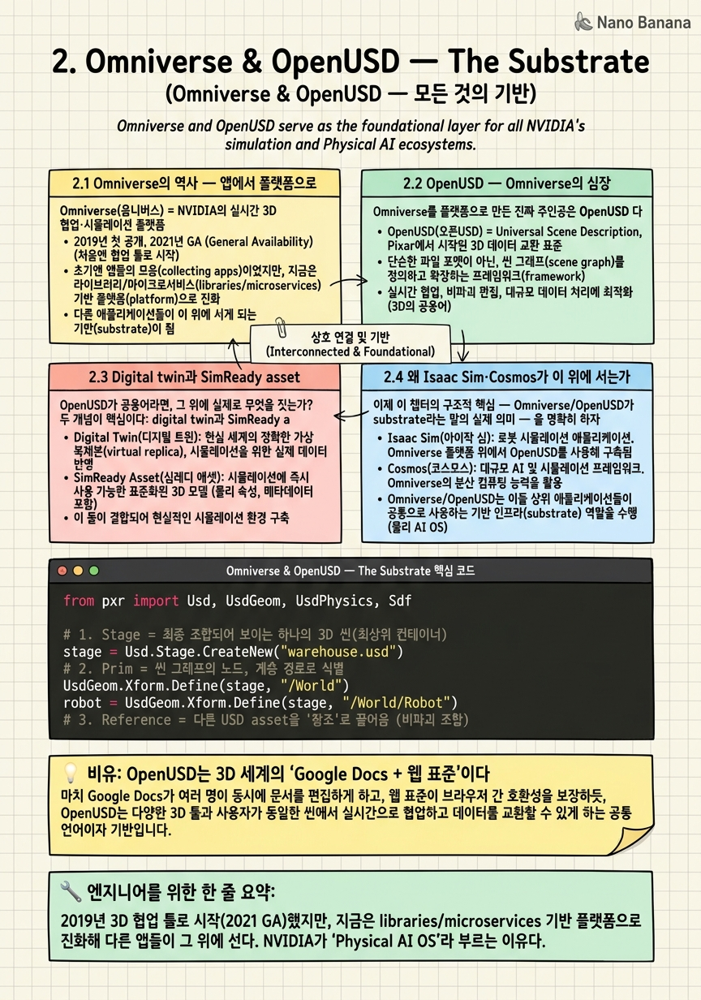

Omniverse & OpenUSD — The Substrate

🎯 학습 목표
- Omniverse가 '앱'이 아니라 'OS/플랫폼'으로 진화한 맥락을 안다
- OpenUSD가 왜 상호운용성의 핵심인지 설명할 수 있다
- digital twin과 SimReady asset의 의미를 이해한다
- Omniverse가 Isaac Sim·Cosmos의 기반이 되는 구조를 그린다
- 산업용 Physical AI OS로 확장되는 방향(DSX)을 안다
1장에서 three computers 중 '시뮬레이션 컴퓨터'가 sim-to-real 루프의 데이터 공장이라고 했다. 그런데 그 공장이 무언가 위에 서 있어야 한다 — 로봇·공장·도시를 하나의 일관된 3D 세계로 표현하는 공통 데이터 층 말이다. 그 층이 Omniverse 이고, 그 심장이 OpenUSD 다.
Omniverse는 처음엔 '3D 협업 툴'로 태어났지만(2019 발표, 2021 오픈베타 GA), 지금은 하나의 앱이 아니라 라이브러리·마이크로서비스의 묶음, 즉 다른 앱들이 그 위에 서는 플랫폼/OS 로 진화했다. NVIDIA가 이를 "Physical AI operating system"으로 포지셔닝하는 이유가 여기 있다.
이 챕터는 세 가지를 파고든다. 첫째, Omniverse가 왜 앱이 아니라 substrate(기반층)인가. 둘째, 그 substrate의 공통 언어인 OpenUSD가 어떻게 상호운용성(interoperability)을 만드는가. 셋째, 그 위에 SimReady asset·digital twin·DSX Blueprint 같은 산업 규모의 구조물이 어떻게 올라가고, 결국 Isaac Sim(3장)과 Cosmos(5장)가 왜 모두 이 층 위에 서는가.
핵심 내용
2.1 Omniverse의 역사 — 앱에서 플랫폼으로
Omniverse(옴니버스) = NVIDIA의 실시간 3D 협업·시뮬레이션 플랫폼. digital twin과 산업 시뮬레이션을 위한 공통 무대다.
타임라인을 보면 성격 변화가 보인다.
| 시점 | 사건 | 성격 |
|---|---|---|
| 2019 | NVIDIA가 Omniverse 발표 | 3D 협업 툴로 시작 |
| 2021 | 오픈베타 → GA(정식 출시) | 실시간 협업 플랫폼 |
| 2022~24 | Isaac Sim·산업 파트너 결합 | 시뮬레이션 substrate |
| 2025~26 | libraries/microservices화, DSX Blueprint | Physical AI OS |
초기 Omniverse는 아티스트들이 서로 다른 DCC 툴(Maya, 3ds Max, Blender 등)에서 같은 3D 씬을 실시간으로 공동 편집하게 해주는 협업 도구로 팔렸다. 여러 툴이 하나의 씬을 동시에 만지려면 공통 데이터 포맷이 필요했고, 그 답으로 채택한 것이 OpenUSD다 — 이 선택이 나중에 모든 것을 바꾼다.
지금의 Omniverse는 '실행하는 하나의 앱'이 아니다. NVIDIA는 Omniverse를 libraries와 microservices의 집합 으로 재구성해, 다른 애플리케이션이 그 기능(렌더·물리·USD 조합·협업)을 가져다 자기 앱에 통합할 수 있게 만들었다. 즉 Omniverse는 이제 '앱'보다 '플랫폼/SDK'에 가깝다.
이 전환이 중요한 이유: 앱은 경쟁 제품이 대체할 수 있지만, 플랫폼은 그 위에 다른 것들이 서는 순간 대체 비용이 폭발한다. Isaac Sim도, Cosmos의 일부도, 산업 파트너의 digital twin도 모두 이 층 위에 선다. Omniverse가 'Physical AI의 OS'라는 말은 바로 이 구조를 가리킨다.
2.2 OpenUSD — Omniverse의 심장
Omniverse를 플랫폼으로 만든 진짜 주인공은 OpenUSD 다.
OpenUSD(Universal Scene Description) = Pixar가 개발해 오픈소스로 공개한 3D 씬 기술 프레임워크. 하나의 3D 세계(지오메트리·재질·조명·애니메이션·물리)를 서술하고, 여러 소스를 비파괴적으로 조합하는 공통 포맷이다.
Pixar가 이걸 만든 이유는 애니메이션 스튜디오의 현실 때문이었다. 한 장면(scene)에 모델러·리깅·조명·이펙트 아티스트 수십 명이 동시에 손을 대야 한다. 그래서 USD의 설계 철학은 '하나의 거대 파일'이 아니라 layering(레이어링)과 composition(합성) 이다.
-
Stage(스테이지) = 최종적으로 조합되어 보이는 하나의 씬 전체. 여러 레이어를 합성한 결과.
-
Prim(프림) = 씬 그래프의 노드.
/World/Robot/Arm같은 계층 경로로 식별되며, 메시·조명·카메라·물리 바디 등 무엇이든 될 수 있다. -
Reference / Layer = 다른 USD 파일을 '참조'로 끌어오거나, 기존 씬 위에 새 레이어를 '덮어써서' 비파괴적으로 변경. 조명 팀은 지오메트리를 건드리지 않고 조명 레이어만 얹는다.
이 layering 구조가 곧 상호운용성(interoperability) 의 열쇠다. 서로 다른 툴·회사·팀이 같은 Stage를 각자의 레이어로 기여하고, 충돌 없이 합성된다. NVIDIA가 이 표준을 혼자 소유하지 않겠다고 선언하며 Alliance for OpenUSD(AOUSD) 를 Pixar·Adobe·Apple·Autodesk 등과 결성한 것도 이 때문이다 — 표준이 중립적일수록 더 많은 생태계가 올라탄다.
통찰: OpenUSD는 3D 세계의 '공용어'다. 로봇(Isaac Sim)도, 공장(digital twin)도, 생성 모델(Cosmos)도 같은 USD로 세계를 표현하기 때문에, 한 층에서 만든 asset이 다른 층에서 그대로 쓰인다. 이것이 NVIDIA 수직 통합의 데이터 접착제다.
2.3 Digital twin과 SimReady asset
OpenUSD가 공용어라면, 그 위에 실제로 무엇을 짓는가? 두 개념이 핵심이다: digital twin과 SimReady asset.
Digital twin(디지털 트윈) = 실제 물리 시스템(로봇·생산 라인·창고·데이터센터·도시)을 물리적으로 충실하게 반영한 가상 복제본. 실물과 동기화되어 시뮬레이션·모니터링·what-if 테스트에 쓰인다.
digital twin이 단순한 3D 모델과 다른 점은 물리적으로 유효(physically valid) 하다는 것이다. 그냥 예쁜 창고 렌더가 아니라, 그 안에서 로봇을 돌리면 실제와 같은 충돌·마찰·센서 반응이 나와야 한다. 그래서 등장하는 것이 SimReady다.
SimReady asset(심레디 에셋) = 시각적 지오메트리뿐 아니라 시뮬레이션에 필요한 물리 속성 — 질량, 마찰계수, 충돌 형상, 관절(joint), 재질의 물리 특성, semantic label — 까지 포함하도록 표준화된 3D asset.
일반 3D asset과 SimReady의 차이를 표로 보면 분명하다.
| 속성 | 일반 3D asset | SimReady asset |
|---|---|---|
| 지오메트리 | 있음 | 있음 |
| 재질(시각) | 있음 | 있음 (물리 기반 PBR) |
| 질량·관성 | 없음 | 있음 |
| 충돌 형상 | 없거나 근사 | 정의됨 |
| 관절/조인트 | 없음 | 로봇/기계는 있음 |
| semantic label | 없음 | 있음 (SDG용) |
SimReady가 왜 결정적인가? 1장의 sim-to-real gap이 여기서 결정되기 때문이다. asset의 물리 속성이 부실하면 시뮬레이션이 아무리 예뻐도 실물과 다르게 움직이고, gap이 커진다. 반대로 SimReady asset이 잘 갖춰지면 같은 asset을 렌더링(3장 RTX)·물리(3장 PhysX)·합성 데이터 라벨(3장 SDG)에 그대로 재사용할 수 있다. OpenUSD가 '한 번 만들면 어디서나 쓴다'를 데이터 포맷 수준에서, SimReady가 '물리적으로 유효하게'를 asset 수준에서 보장한다.
2.4 왜 Isaac Sim·Cosmos가 이 위에 서는가
이제 이 챕터의 구조적 핵심 — Omniverse/OpenUSD가 substrate라는 말의 실제 의미 — 을 명확히 하자.
substrate(기반층)라는 건 상위 제품들이 자기만의 세계 표현을 새로 만들지 않고 이 층을 빌려 쓴다는 뜻이다. 구체적으로:
-
Isaac Sim(3장) 은 Omniverse 위에 세운 로봇 시뮬레이션 reference application이다. 자기 씬 포맷을 발명하지 않고 OpenUSD Stage를 그대로 쓰고, Omniverse의 RTX 렌더·PhysX 물리를 빌린다. 그래서 SimReady asset·digital twin이 Isaac Sim에서 즉시 통한다.
-
Cosmos(5장) 의 World Foundation Model은 물리적으로 그럴듯한 영상을 생성하는데, 그 조건(condition)과 검증의 상당 부분이 Omniverse에서 렌더된 USD 씬과 맞물린다. 시뮬레이션이 만든 정확한 3D ground-truth가 생성 모델의 재료이자 채점 기준이 된다.
-
산업 파트너의 앱 (아래 2.5)도 각자의 digital twin을 OpenUSD로 표현해 Omniverse에 얹는다.
이 관계를 층으로 그리면 이렇다.
| 층 | 무엇 | 역할 |
|---|---|---|
| 상위 | Isaac Lab (train), 정책 | 학습·정책 |
| 데이터 | Isaac Sim, Cosmos | 시뮬레이션·생성 |
| 기반 | Omniverse + OpenUSD | 공통 3D substrate |
| 바닥 | CUDA / RTX GPU | 연산·렌더 |
핵심 통찰: NVIDIA가 상위 제품을 아무리 많이 내놓아도 그것들이 서로 데이터를 주고받을 수 있는 이유는, 전부 같은 substrate(OpenUSD 씬)를 공유 하기 때문이다. 만약 Isaac Sim과 Cosmos가 각자 다른 씬 포맷을 썼다면, 시뮬에서 만든 세계를 생성 모델에 넘기거나 학습으로 보내는 매 단계마다 변환·손실이 생겼을 것이다. Omniverse/OpenUSD는 그 변환을 없앤다 — 이것이 1장에서 말한 '파이프의 마찰 제거'의 데이터 층 구현이다.
2.5 산업 Physical AI OS로 — DSX Blueprint와 파트너 생태계
Omniverse의 야심은 로봇 시뮬레이터 아래 깔린 층에 머물지 않는다. 2025~2026년의 방향은 산업 전체의 운영 체계 로의 확장이다.
가장 상징적인 것이 Omniverse DSX Blueprint 다.
DSX Blueprint(디에스엑스 블루프린트) = 기가와트급 AI 팩토리(대규모 AI 데이터센터)를 통째로 digital twin으로 설계·시뮬레이션·운영하기 위한 참조 설계(blueprint). 건물·전력·냉각·네트워크·GPU 랙 배치까지 가상에서 먼저 짓고 검증한다.
여기서 '팩토리'는 두 가지 의미로 겹친다 — AI를 굽는 물리적 데이터센터 자체이면서, 동시에 그것을 짓기 전에 가상에서 리허설하는 digital twin 공장. NVIDIA는 이 blueprint로 "물리 세계의 거대 인프라도 먼저 Omniverse에서 짓는다"는 메시지를 던진다.
이 확장을 가능케 하는 것이 파트너 생태계다. Omniverse는 산업 소프트웨어 강자들과 통합된다.
- Siemens — 산업 자동화·PLM
- Ansys — 물리 시뮬레이션(구조·유체·전자기)
- SAP — 엔터프라이즈·공급망
- Schneider Electric — 전력·에너지 인프라
- Databricks — 데이터·분석
이들이 각자의 도메인 데이터를 OpenUSD로 Omniverse에 얹으면, 하나의 digital twin 안에서 물리·전력·공급망·분석이 동시에 돌아간다. 파트너를 붙일수록 substrate로서의 중력이 커지는 전형적인 플랫폼 전략이다.
통찰: 로봇 하나를 시뮬레이션하는 것과 기가와트 팩토리를 시뮬레이션하는 것은 스케일이 다르지만, 밑바닥 논리는 같다 — 물리 세계를 짓기 전에 OpenUSD 세계에서 먼저 짓고 검증한다. Omniverse가 로봇용 substrate에서 '산업 Physical AI OS'로 자연스럽게 확장되는 이유가 여기 있고, 이 확장의 산업 측면은 11장(산업 디지털 트윈)에서 다시 만난다.
💡 비유로 이해하기
OpenUSD가 왜 대단한지는 문서 편집에 비유하면 단번에 이해된다.
옛날 방식은 워드 파일을 이메일로 주고받는 것이었다. 모델러가 씬을 만들어 조명 팀에 보내면, 조명 팀이 파일을 열어 고치고 다시 보낸다. 누군가 동시에 고치면 충돌하고, '최종_진짜최종_v3.max' 같은 지옥이 열린다. 초기 3D 파이프라인이 정확히 이랬다.
Google Docs 는 이를 바꿨다. 여러 사람이 같은 문서를 동시에 편집하되, 각자의 변경이 충돌 없이 합쳐진다. OpenUSD의 layering이 정확히 이것이다 — 모델러는 지오메트리 레이어, 조명 팀은 조명 레이어, 물리 엔지니어는 SimReady 물리 레이어를 각자 얹고, Stage가 이를 하나로 합성(composition)한다. 지오메트리를 건드리지 않고 조명만 바꾸는 '비파괴 편집'이 기본값이다.
동시에 OpenUSD는 웹 표준(HTML) 같기도 하다. HTML이 없었다면 모든 브라우저·에디터가 자기만의 문서 포맷을 썼을 것이고 웹은 파편화됐을 것이다. HTML이라는 중립 표준 덕에 누구의 도구로 만든 페이지든 어디서나 열린다. OpenUSD가 Pixar·NVIDIA·Apple·Adobe가 모인 AOUSD를 통해 중립 표준이 되려는 이유가 같다 — 어느 회사 툴로 만든 3D 세계든 Isaac Sim에서도, Cosmos에서도, 파트너 앱에서도 그대로 열리게.
그래서 Omniverse는 '더 좋은 3D 앱'이 아니라 '3D 세계의 공용 문서 플랫폼'이다. 로봇도 공장도 도시도 같은 문서(USD Stage) 위에서 함께 편집되는 세계 — 그게 Physical AI의 substrate다.
💻 코드 예시
OpenUSD의 핵심 개념 — Stage, Prim, Reference, SimReady physics 속성, layering — 을 Pixar의 pxr.Usd API 스타일로 보여준다. 실제 Isaac Sim 씬도 내부적으로 이런 USD 조합으로 구성된다. 실행보다 '어떻게 조합되는가'의 구조를 읽는 것이 목적이다.
from pxr import Usd, UsdGeom, UsdPhysics, Sdf
# 1. Stage = 최종 조합되어 보이는 하나의 3D 씬(최상위 컨테이너)
stage = Usd.Stage.CreateNew("warehouse.usd")
# 2. Prim = 씬 그래프의 노드, 계층 경로로 식별
UsdGeom.Xform.Define(stage, "/World")
robot = UsdGeom.Xform.Define(stage, "/World/Robot")
# 3. Reference = 다른 USD asset을 '참조'로 끌어옴 (비파괴 조합)
robot.GetPrim().GetReferences().AddReference("assets/carter_amr.usd")
# 4. SimReady 물리 속성 부여 = 렌더용 메시를 '시뮬 가능'하게 만든다
UsdPhysics.RigidBodyAPI.Apply(robot.GetPrim()) # 강체
UsdPhysics.CollisionAPI.Apply(robot.GetPrim()) # 충돌 형상
mass = UsdPhysics.MassAPI.Apply(robot.GetPrim())
mass.CreateMassAttr(12.0) # kg
# 5. Layering = 다른 팀이 조명 레이어를 '위에' 덮어씀 (override)
lighting = Sdf.Layer.CreateNew("lighting.usda")
stage.GetRootLayer().subLayerPaths.append(lighting.identifier)
# 6. 저장 = 지오메트리·물리·조명이 하나의 Stage로 합성(compose)됨
stage.GetRootLayer().Save()이 스니펫은 OpenUSD의 다섯 개념을 순서대로 밟는다. (1) Stage를 만들고, (2) /World/Robot 같은 계층 경로로 Prim을 정의한다 — 경로 자체가 씬 그래프의 주소다. (3) AddReference로 미리 만든 로봇 USD를 통째로 참조해 끌어온다: 복사가 아니라 참조이므로 원본이 바뀌면 자동 반영되고, 같은 asset을 수천 번 배치해도 저렴하다. (4) RigidBodyAPI·CollisionAPI·MassAPI를 Apply하는 부분이 바로 SimReady의 핵심 — 시각적 메시에 질량·충돌 같은 물리 속성을 '덧입혀' 시뮬레이션 가능하게 만든다. (5) subLayer로 조명 레이어를 얹는 것이 layering: 지오메트리를 건드리지 않고 조명만 override한다. (6) 최종 Save 시 이 모든 레이어가 하나의 Stage로 합성된다. Isaac Sim이 자기 씬 포맷을 새로 만들지 않고 이 USD 조합을 그대로 쓰기 때문에, 여기서 만든 SimReady 로봇이 3장의 RTX·PhysX·SDG로 곧장 흘러간다.
🏭 현업에서의 평가
✅ 시니어가 보는 것
- OpenUSD의 Stage/Prim/layering/composition을 정확히 설명하고, 그것이 상호운용성으로 이어지는 논리
- SimReady asset이 일반 3D asset과 다른 점(물리 속성·semantic)과 그것이 sim-to-real gap에 미치는 영향
- Omniverse가 '앱'이 아니라 libraries/microservices 기반 플랫폼으로 진화한 맥락
- Isaac Sim·Cosmos가 같은 substrate(USD)를 공유해 파이프 마찰이 제거되는 구조
- AOUSD 같은 중립 표준화 전략과 산업 파트너(DSX) 확장의 플랫폼 논리
⚠️ 레드 플래그
- OpenUSD를 그냥 '3D 파일 포맷'(OBJ/FBX 같은)으로만 이해하고 layering/composition을 모름
- SimReady와 일반 asset의 차이를 물리 속성 수준에서 구분하지 못함
- Omniverse를 하나의 실행 앱으로만 봄 (플랫폼/substrate 관점 부재)
- 왜 Isaac Sim·Cosmos가 굳이 같은 층 위에 서는지 설명 못 함
- digital twin을 '예쁜 3D 렌더'와 동일시하고 물리적 유효성을 놓침
🎤 예상 인터뷰 질문
- Q1. OpenUSD의 layering/composition이 왜 상호운용성의 핵심인지, FBX 같은 단일 파일 포맷과 대비해 설명하라.
- Q2. SimReady asset이 일반 3D asset과 무엇이 다르며, 그 차이가 sim-to-real gap과 어떻게 연결되는가?
- Q3. Isaac Sim과 Cosmos가 서로 다른 씬 포맷을 썼다면 어떤 비용이 생기며, 공통 substrate(OpenUSD)가 그것을 어떻게 없애는가?
✨ 핵심 요약
Omniverse는 앱이 아니라 substrate다
2019년 3D 협업 툴로 시작(2021 GA)했지만, 지금은 libraries/microservices 기반 플랫폼으로 진화해 다른 앱들이 그 위에 선다. NVIDIA가 'Physical AI OS'라 부르는 이유다.
OpenUSD가 그 심장이다
Pixar가 만든 오픈소스 3D 씬 프레임워크. 하나의 세계를 서술하고 여러 소스를 비파괴적으로 조합하는 공통 포맷으로, Omniverse의 상호운용성을 떠받친다.
layering/composition이 상호운용성의 열쇠다
Stage(전체 씬)에 Prim(노드)들이 계층 경로로 놓이고, 여러 팀·툴이 각자의 레이어를 비파괴적으로 얹어 합성한다. 이것이 '같은 세계를 함께 편집'을 가능케 한다.
AOUSD로 표준을 중립화한다
NVIDIA는 OpenUSD를 독점하지 않고 Pixar·Adobe·Apple·Autodesk와 Alliance for OpenUSD를 결성했다. 표준이 중립적일수록 더 많은 생태계가 올라타 substrate의 중력이 커진다.
SimReady = 물리 속성을 담은 asset
질량·마찰·충돌 형상·관절·semantic label까지 표준화해 포함한 3D asset. 일반 asset과 달리 '시뮬레이션 가능'하며, 그 충실도가 sim-to-real gap을 asset 수준에서 좌우한다.
digital twin은 물리적으로 유효한 복제본이다
실제 로봇·공장·데이터센터를 물리적으로 충실하게 반영한 가상 복제본. 예쁜 렌더가 아니라, 그 안에서 실제와 같은 충돌·마찰·센서 반응이 나와야 한다.
Isaac Sim·Cosmos가 이 층 위에 선다
둘 다 자기 씬 포맷을 발명하지 않고 같은 OpenUSD substrate를 공유한다. 그래서 시뮬→생성→학습으로 세계를 넘길 때 변환·손실이 없다 — 파이프 마찰 제거의 데이터 층 구현이다.
DSX로 산업 Physical AI OS로 확장된다
Omniverse DSX Blueprint는 기가와트급 AI 팩토리를 통째로 digital twin으로 짓는 참조 설계다. Siemens·Ansys·SAP·Schneider·Databricks 통합으로 로봇 substrate가 산업 OS로 넓어진다.